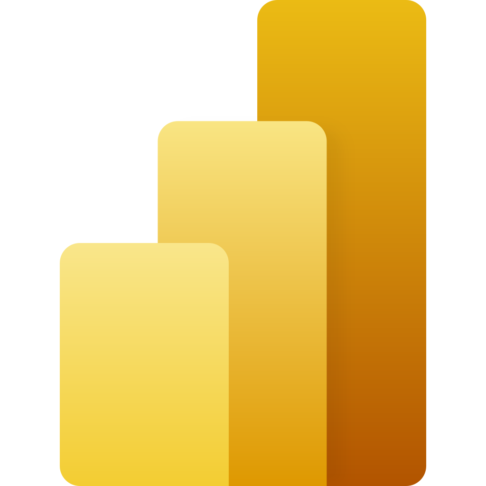

Contexte & Objectifs
Le projet "One Day in Brazil" avait pour objectif principal de modéliser et d'analyser les habitudes de consommation sur les plateformes de commerce électronique brésiliennes. Grâce aux données issues de Olist Store, une plateforme majeure de commerce électronique, ce projet visait à :
- Comprendre les habitudes de consommation des clients en fonction des produits, des régions et des modes de paiement.
- Fournir un tableau de bord interactif permettant de visualiser les tendances et d’éclairer la prise de décision stratégique.
Problématique : Quelles sont les habitudes de consommation des clients sur les plateformes de commerce électronique au Brésil, et comment varient-elles en fonction des produits et des modes de paiement ?
Étapes du Projet
- Préparation des Données : Collecte, exploration, et enrichissement des données avec Power Query.
- Modélisation du SID : Création d’un schéma en étoile et en flocon pour structurer les données.
- Extraction, Transformation et Chargement (ETL) : Gestion des données pour un modèle décisionnel optimisé.
- Création des Mesures et Visualisations : Conception de visualisations dynamiques et interactives sous Power BI.
- Restitution : Tableau de bord interactif et présentation des résultats.
Résultats & Compétences Acquises
Résultats clés :
- La majorité des ventes se concentre sur des produits à prix faible et moyen.
- Les cartes de crédit sont le mode de paiement privilégié, suivies par le boleto.
- Les pics de vente coïncident avec des événements promotionnels (e.g., Black Friday, Noël).
Compétences acquises : Maitrise des étapes ETL, création et gestion d’un SID structuré, visualisations interactives sous Power BI.
Visuels du Projet
Recueil Méthodologique
Forces :
- Représentativité améliorée grâce à l’intégration des données et à une méthodologie rigoureuse.
- Documentation claire des étapes ETL et analyses décisionnelles.
Faiblesses :
- Difficulté initiale à modéliser certaines relations complexes.
- Temps conséquent nécessaire à la maîtrise de DAX et Power Query.
Outils & Langages Utilisés
